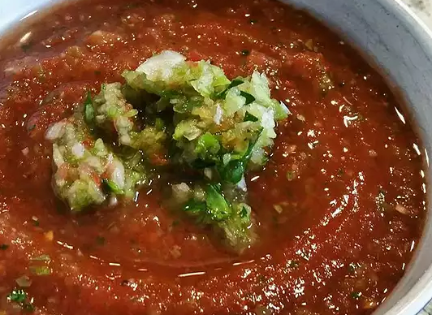

GAZPACHO SOUP (cold!!!)

Descripton
A delicious COLD soup just in time for summer! Can be garnished with croutons, sour cream or a dash of hot pepper sauce. Serve COLD.
Ingredients
- 10 large tomatoes
- 1/4 cup olive oil
- 1/4 cup red wine vinegar
- 4 cups tomato juice
- 3 cloves garlic, minced
- 1 teaspoon salt
- 1 teaspoon ground black pepper
- 6 cucumbers, sliced
- 2 onions, chopped
- 1 ounce sliced almonds
- croutons, hot sauce, sour cream (optional garnishes)
Steps
- Blanch the tomatoes in a pot of boiling water for about 15 seconds, or until the skins just begin to peel. Immediately remove them from the hot water and plunge them in ice water to stop them from cooking.
- Peel, core and dice the tomatoes into 1/2 inch pieces.
- In a large pot, combine the oil and vinegar and whisk together well. Pour in the tomato juice, garlic, salt and ground black pepper and whisk well again.
- Stir in the tomatoes, cucumbers, onions and almonds and combine all the ingredients together thoroughly.
- Cover and refrigerate overnight. SERVE COLD. Do not allow the soup to reach room temperature. Let me explain something to you. If you think you’re going to be eating something ice cold and you bring it up to your lips and it’s room temp, it’s going to feel like your mouth’s on fire. It’s gonna feel like your body’s on fire.